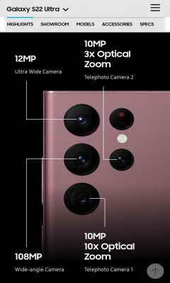
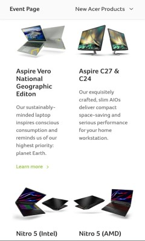

Design Principles Document
Emanuel Valencia
Rule Of Thirds
Tesla
Tesla web page has an incredible use of the Rule of Thirds principle because as soon as you open the page you can see a car that is perfectly centered, and every other image is perfectly centered as well. This creates a harmonious environment for everyone and shows the design principles that they manage to have and show their greatness and why the company is among the best ones.
Contrast
Samsung
Samsung's website is really good at managing its colors and giving an amazing contrast so that we can identify elements quickly. The use of black background gives the user an easy way to pay more attention to the principal elements which are the new phone and its principal features as well. When you scroll down the page it is easy to identify the principal content because of the colors and the contrast.
Alignment
Acer
Acer's website manages the alignment design principle in an excellent way. The main purpose of the website is to show and sell its products so they place each product in columns and rows so that the user finds it easy to see them all. Finally, the way the content of the page is aligned, gives the user a sense of order and efficiency to navigate through and perhaps make a purchase.